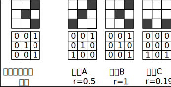

相関とは
相関値(r)の計算式
\[\begin{equation} \begin{aligned} &r=\frac{S_{x y}}{S_{x} S_{y}} \\ &=\frac{\frac{1}{n} \sum_{i=1}^{n}\left(x_{i}-\bar{x}\right)\left(y_{i}-\bar{y}\right)}{\sqrt{\frac{1}{n} \sum_{i=1}^{n}\left(x_{i}-\bar{x}\right)^{2}} \sqrt{\frac{1}{n} \sum_{i=1}^{n}\left(y_{i}-\bar{y}\right)^{2}}} \end{aligned}\end{equation}\]

テンプレート画像と画像Bの相関係数が１となり，画像Aの相関係数rは0.5[1]．
式の解釈 [2]：
1. それぞれの変数の平均値を求める
2. 変数の偏差(平均値を引いた値)を求める
3. 変数の標準偏差(分散の正の平方根)を求める.
4. 偏差の積の平均(共分散)を求める
5. 共分散をそれぞれの標準偏差で割る
6. 相関係数が得られる
画像相関法の計算方法
SAD(Sum of Absolute Difference)
画素の輝度値の差の絶対値を求め、その和を求めます。2つの領域が類似するほど値が小さくなる。
\[\begin{equation} SAD=\sum_{y} \sum_{x}|A(x, y)-B(x, y)| \end{equation} \]
SSD(Sum of Squared Difference)
画素の輝度値の差の二乗を求め、その和を求めます。2つの領域が類似するほど値が小さくなる。
\[\begin{equation} SSD=\sum_{y} \sum_{x}(A(x, y)-B(x, y))^{2} \end{equation} \]
NCC（Normalized Cross Correlation）
正規化相互相関。分子では、輝度値の内積から、似た画像では内積の値が大きくなる。分母では、分子の数値を正規化する。2つの領域が類似するほど値が大きくなり、最大＝１、最小＝0。
\[\begin{equation} NCC=\frac{\sum_{y} \sum_{x} A(x, y) B(x, y)}{\sqrt{\sum_{y} \sum_{x} A(x, y)^{2} \sum_{y} \sum_{x} B(x, y)^{2}}}\end{equation} \]
ZNCC（Zero means Normalized Cross Correlation）
補正NCC。2つの画像の明るさが同じであれば、NCCで相関値が求めらるが、2つの画像の明るさが違ってくると、画素の輝度値が異なるため、同じ画像でも相関値が異なってししまう。
そこで、2つの領域の輝度値の平均をそれぞれ引くことで、明るさの違いを補正する役割を果たす． \[\begin{equation}
ZNCC=\frac{\sum_{y} \sum_{x}(A(x, y)-\bar{A})(B(x, y)-\bar{B})}{\sqrt{\sum_{y} \Sigma_{x}(A(x, y)-\bar{A})^{2} \sum_{y} \Sigma_{x}(B(x, y)-\bar{B})^{2}}} \end{equation}
\]
テンプレートマーチング(Template matching)
最初の画素から、1画素づつ移動させて、2つの画像の類似度を探索するものです。